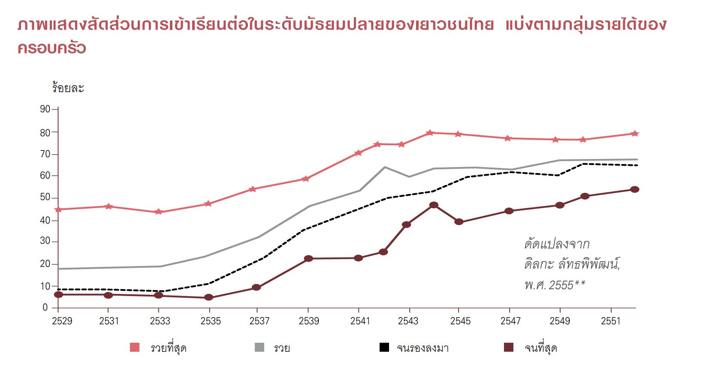
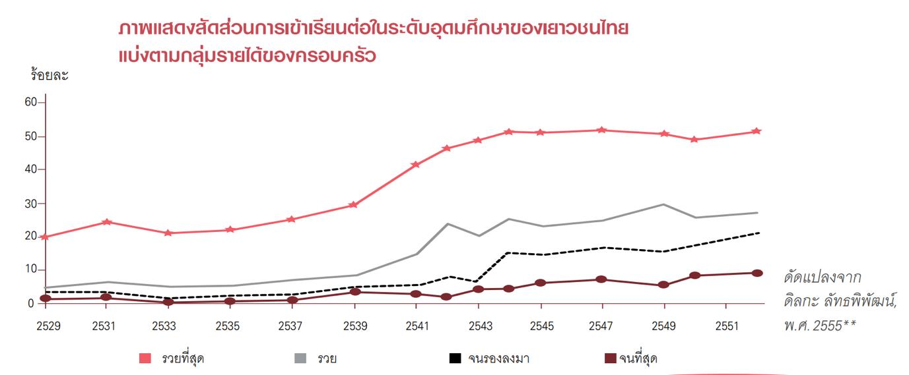

เป็นที่ทราบกันดีว่าระบบการศึกษาของไทยมีปัญหาในหลายด้าน แต่ปัญหาที่มักจะถูกหยิบยกมาพูดถึงก็คือปัญหาด้านปริมาณ ซึ่งหมายถึง ปัญหาที่เด็กไทยไม่สามารถเข้าถึงการศึกษาได้มากเพียงพอที่จะสนับสนุนการทำงานในอนาคต เช่น มีเด็กไทยจำนวนไม่น้อยที่ต้องออกจากการเรียนกลางคัน หรือครอบครัวไม่สามารถแบกรับภาระค่าใช้จ่ายทางการศึกษาทำให้ไม่สามารถเข้าถึงการศึกษาได้
อีกปัญหาหนึ่งที่มีความสำคัญไม่น้อยไปกว่ากันและได้รับความสนใจ คือ ปัญหาด้านคุณภาพ ซึ่งผลการสำรวจความพึงพอใจของภาคธุรกิจและผลการสอบวัดทักษะพื้นฐานในระดับนานาชาติ บ่งชี้ถึงปัญหาว่าความสามารถของเด็กนักเรียนไทยยังอยู่ในระดับแย่ (Poor) และมีทักษะไม่เพียงพอที่จะตอบสนองต่อความต้องการของตลาดแรงงาน
แม้ว่าทั้งสองมิติปัญหาจะมีความสำคัญอย่างยิ่งต่อการพัฒนาการศึกษาของไทย แต่ยังมีอีกมิติหนึ่งที่เป็นปัญหาที่สำคัญทางด้านการศึกษาที่ควรได้รับการจัดการแก้ไขเช่นเดียวกัน มิติที่สำคัญดังกล่าว ก็คือ มิติความเหลื่อมล้ำทางการศึกษา ซึ่งหมายถึง ความแตกต่างในผลลัพธ์ของการศึกษา อันเป็นผลเกี่ยวเนื่องมาจากปัจจัยต่างๆ ที่มากกว่าแค่คุณภาพของการเรียนการสอน แต่ครอบคลุมไปถึงปัจจัยอื่นๆ ที่เกี่ยวข้องทั้งหมด ตั้งแต่ปัจจัยเฉพาะของนักเรียนแต่ละคน ปัจจัยทางด้านครอบครัว ไปจนถึงปัจจัยที่เกี่ยวข้องกับสถานศึกษา
ผลการศึกษาพบว่า ปัจจัยที่สำคัญ 5 อันดับแรกที่ส่งผลกระทบต่อปัญหาความเหลื่อมล้ำ ซึ่งสามารถใช้เป็นเป้าหมายในการลดทอนปัญหาความเหลื่อมล้ำทางการศึกษาของไทย ได้แก่
1.การสนับสนุนให้ความรู้แก่มารดาทั้งทางด้านการศึกษา และการประกอบอาชีพจะเป็นการช่วยเหลือเด็กนักเรียนทาง อ้อมที่ให้ประสิทธิผลที่สูง
5.หากเพิ่มสัดส่วนครูต่อนักเรียน โดยเฉพาะอย่างยิ่งในโรงเรียนที่มีสัดส่วนดังกล่าวค่อนข้างต่ำจะช่วยลดความเหลื่อมล้ำระหว่างโรงเรียนได้ดียิ่งขึ้น
อัตราการเข้าเรียนต่อในระดับมัธยมศึกษาตอนปลายของเยาวชน อายุ 16-19 ปีในกลุ่มที่มี ฐานะยากจนที่สุด แม้มีแนวโน้มสูงขึ้นกว่าเดิมมาก จาก ร้อยละ 6.7 ในปี 2529 มาเป็น ร้อยละ 53.7 ในปี 2552 นอกจากนี้ ช่องว่างของโอกาสทางการศึกษาระดับมัธยมปลายระหว่างเด็กที่มาจาก กลุ่มครอบครัวที่รวยที่สุดกับกลุ่มจนที่สุดหดแคบลงไปมาก แต่เมื่อดูภาพรวมของเด็กไทยทั้งหมดที่เข้าเรียนในระดับนี้ จะเห็นว่าโอกาสทางการศึกษา ก็ยังมีความลดหลั่นกันไปตามระดับฐานะเช่นเดียวกับในอดีต ทั้งที่อยู่ในส่วนของการศึกษา ภาคบังคับ
อัตราการเข้าเรียนต่อระดับอุดมศึกษา ของเยาวชนอายุ 19-24 ปี แสดงให้เห็นปัญหา “ความเหลื่อมล้ำ” ชนิดก้าวกระโดด และเป็นสถานการณ์ที่กลับตาลปัตรจากที่พบในช่วงชั้น มัธยมปลาย โดย ช่องว่างระหว่างกลุ่มเด็กจากครอบครัวร่ำรวยที่สุดกับกลุ่มยากจน ที่สุดที่มีโอกาสได้เรียนต่อถึงขั้นอุดมศึกษาถ่างกว้างขึ้นกว่าเมื่อปี 2529 ที่ทิ้งห่างกัน ร้อยละ 18.5 กลายเป็น 42.5 ในปี 2552**
เมื่อหันมาดูในแง่ของคุณภาพการศึกษา โดยใช้ข้อมูลผลสัมฤทธิ์ทางการเรียนครั้งล่าสุด จากการ ทดสอบมาตรฐานทั้งในเวทีไทยและสากลมาประกอบกัน อันได้แก่ PISA (Programme for International Student Assessment) TIMSS (Trends in International Mathematics and Science Study) และ การทดสอบแห่งชาติ หรือ โอเน็ต (O-NET) ตอกย้ำให้เห็นประจักษ์ถึงปัญหา คุณภาพทางการศึกษาที่ซ่อนเร้นอยู่ ในโอกาสที่ดูเปิดกว้างยิ่งกว่ายุคใดๆ ที่ผ่านมา
ในช่วงเวลาที่ผ่านมา เงื่อนไขทางด้านเศรษฐกิจและสังคม ไม่เพียงมีส่วนกำหนดคุณภาพการ ศึกษาที่เด็กไทยแต่ละคนได้รับ แต่ยังกำกับ “ทางเลือก” หรือเส้นทางอนาคต ว่าเด็กคนนั้นว่าจะก้าวไปสู่จุดใด • มีเงินเข้ามหาวิทยาลัย...จนไปอาชีวะ ข้อมูลในตารางนี้แสดงให้เห็นว่า สถาบันอาชีวศึกษา เป็นทางเลือกหลักของเด็กที่มาจากครอบครัวทุกระดับฐานะ นอกเหนือจากกลุ่มที่รวยที่สุด ซึ่งกลุ่มที่รวยที่สุดนี้ไม่เพียงมีแนวโน้มที่จะมุ่งไปเรียนต่อในมหาวิทยาลัยเป็นหลักมาโดยตลอด เท่านั้น แต่ยังหันหลังให้สถาบันอาชีวศึกษามากยิ่งขึ้นเรื่อยๆ นั่นหมายถึงว่า “เด็กอาชีวะ” มีความหลากหลายทางฐานะลดลง เพราะกลายเป็นสถานศึกษาสำหรับเด็กจากครอบครัว ฐานะด้อยกว่าในสังคมไปในระยะหลังๆ***